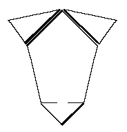

The Bocksten Bog Man
The Under Hose

- Top/Heel Length: 60 cm (23.6")
- Width at the Top: 47 cm (18.5")
- Width at the Bottom: 29 cm (11.4")
- Foot Length: n/a
- Weaving Technique: 2/1
- Thread Count: 10x7 threads/cm (25.4x19.05 threads per inch)
Some Sources:
- Nockert, Margareta. Bockstenmannen, Och Hans Dr�kt. Halmstad och Varberg:
Stiftelsen Hallands l�nsmuseer, 1985.
Go to Hose Page; Bocksten Bog Site Page
Some Clothes of the Middle Ages -- The Bocksten Bog Man -- The Under Hose, by I.
Marc Carlson, Copyright 1996
This page is given for the free exchange of information, provided the Author's Name is
included in all future revisions, and no money change hands, other than as expressed in
the Copyright Page.